Many basic solid shapes such as a cuboid, parallelopiped, cylinder, cone, prism, and pyramid can be made using foldable flat materials like paper, cardboard, and even metallic sheets! This is one of the methods for manufacturing hollow solids.

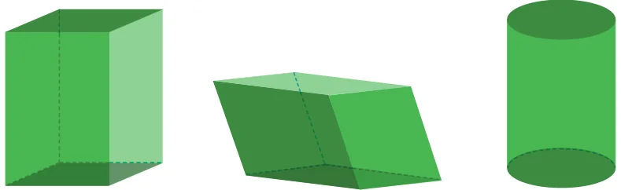
Cuboid Parallelopiped Cylinder
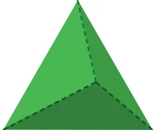
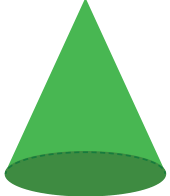
Cone Triangular prism Triangular pyramid
While discussing solids that contain plane surfaces in their boundaries, the notion of faces, edges and vertices serves a useful purpose.
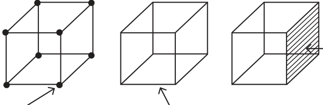
Vertex Edge
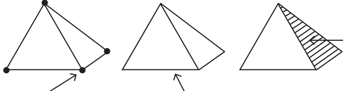
Vertex Edge
Faces are the plane/flat surfaces of a solid that form its boundary. Edges are the line segments that form the sides of the faces, and vertices are the points at which the edges meet. For example, a cuboid or cube has 6 faces, 12 edges and 8 vertices.
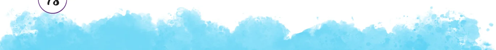

There are multiple types of prisms and pyramids, whose names depend on the shapes of their faces.
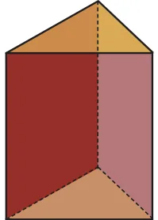
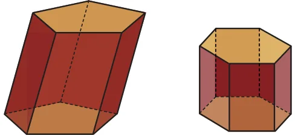
Triangular Pentagonal Hexagonal Prism Prism Prism
Prism: A prism, in general, has two congruent polygons as opposite faces, with edges connecting the corresponding vertices of these polygons. All the other faces are parallelograms. Based on the shape of the congruent polygons, prisms may be called triangular prisms, pentagonal prisms, and so on. Pyramids: A pyramid, in general, has a polygonal base and a point outside it, and edges connect the point with each of the vertices of the base. Based on the shape of the base, pyramids may be called triangular pyramids, square pyramids, pentagonal pyramids, and so on. A triangular pyramid is also known as a tetrahedron.
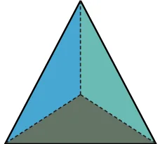
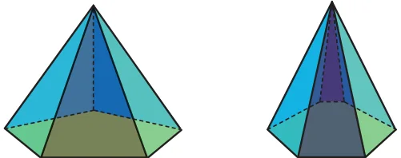
Triangular Pentagonal Hexagonal Pyramid Pyramid Pyramid
If the congruent polygons of a prism have 10 sides, how many faces, edges and vertices does the prism have? What if the polygons have n sides?
If the base of a pyramid has 10 sides, how many faces, edges and vertices does the pyramid have? What if the base is an n-sided polygon? Now we will see how to make different solids using a foldable flat surface such as paper, cardboard, etc. The basic idea is to create a shape on a flat surface that can be folded into the solid. Such a shape is called a net. In other words, a net is obtained by ‘unfolding’ a solid onto a plane.

What is a net of a cube?
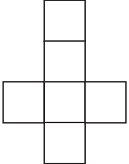
Visualise how it can be folded to form a cube.
Practical Aspects of Using a Net
To make an actual cube from its net, certain practical aspects have to be kept in mind. One is that the material used must have sufficient sturdiness for the cube to Fig. 4.1 stand. The second aspect is that there should be some mechanism for attaching the faces together. If cardboard or a similar material is used, cello tape is one way to join the adjacent faces. For less sturdy materials, such as chart paper, it is useful to have extra ‘flaps’ on some of the faces that can be stuck to the adjacent faces. You might have observed this strategy in packaging boxes.
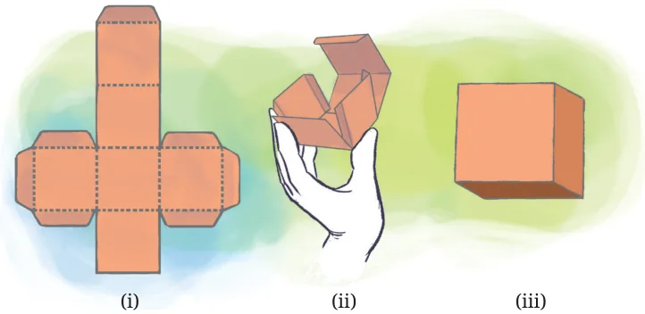
However, when we talk about the net of a solid, we consider only the shape formed by unfolding the solid, and not the other supporting flaps that we may use to actually make the solid. Apart from using a net, there are other ways to make a cube from paper. There are multiple possible nets one can use to build a cube.